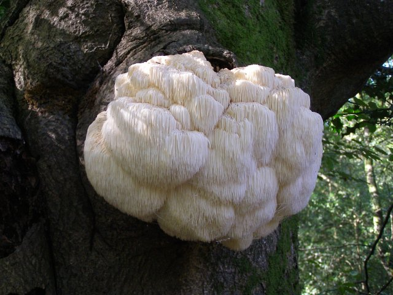

As a saprophyte that occurs on dead wood, H. erinaceus requires adequate substrate factors, including suitable carbon and nitrogen sources, a certain pH value and ideal carbon/nitrogen ratio.
Many different substrates have been successfully used for this mushroom cultivation. Depending on the type of cultivation, the substrate can be either solid (artificial log) or liquid (submerged culture and deep submerged culture).
The solid substrate is most commonly a mixture of sawdust of hardwood or conifer containing different complements that may include wheat bran, wheat straw, soybean meal, corn meal, rice bran and rice straw. For example, H. erinaceus strains grow on beech sawdust substrate enriched with wheat bran (20%), rye grain (25%), soybean meal (7%), rapeseed meal (10%) or meat-osseous flour (6%).
An example of a liquid substrate composition can be glucose for the carbon source, soybean powder, corn powder, and wheat bran powder as a complex nitrogen source. The pH values most suitable for the favorable growth of H. erinaceus were in the range of 5.0 - 9.0, with pH 6.0 as optimal.
Climate Requirements
Hericium erinaceus requires a humid environment for its growth: 85 to 90% of relative humidity in the air. The incubation temperature most suitable for the mycelial growth of H. erinaceus was found to be 25 °C, and the optimum temperature for vegetative growth was 26 °C.[24] H. erinaceus is unable to grow with a water potential lower than -5 Mpa.
The artificial cultivation of H. erinaceus was first reported in China in 1988. It is cultivated using artificial logs, bottles and polypropylene bags. However, this type of artificial cultivation is not suitable for industrialized production due to its low yield and long cultivation cycles.
Submerged culture is a type of artificial cultivation of H. erinaceus whereby the fungus is grown in a liquid medium. Using this method, a large number of mycelia can be obtained quickly. Bioactive compounds can be sourced from the fruiting bodies, submerged-cultivated mycelial biomass or liquid-cultivated broth. Growers optimize the culture medium composition to obtain simultaneously high yields of H. erinaceus mycelial biomass, exopolysaccharides, and polysaccharides.[citation needed] Submerged fermentation is preferable for the production of mycelial biomass and biologically active metabolites in order to produce a more uniform biomass and extract products.
Growth regulators, such as 2,4-Dichlorophenoxyacetic acid and gibberellin, were observed to have an advantageous impact on spore germination. Other technologies, like red and green laser light of low intensity, stimulated spore germination as well as the vegetative growth of mycelium. Argon and helium lasers also contributed to the acceleration of fruit body development by 36–51%.
Wild Strains
Wild strains of Hericium spp. can be isolated and cultivated by first gathering fruiting bodies from fallen trees in the natural habitat. The fruiting bodies can then be opened to attain pieces of their inner spore-producing tissue. This tissue is then placed onto petri dishes with agar to cultivate fungal colonies at 25 °C. After several transfers to new petri dishes to verify the purity of the strain, it can be kept at -80 °C for long-term storage.
